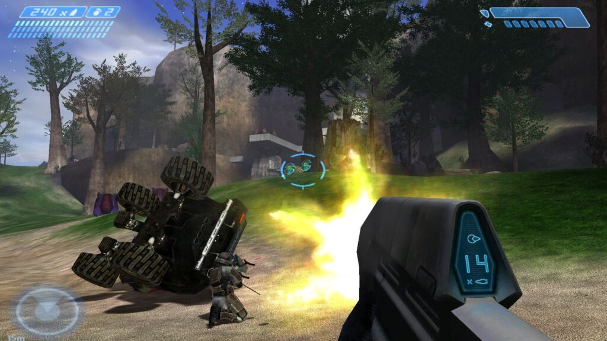
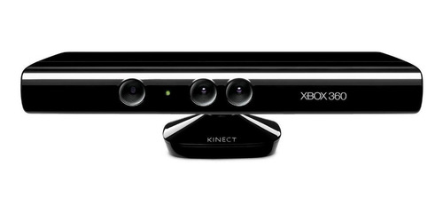
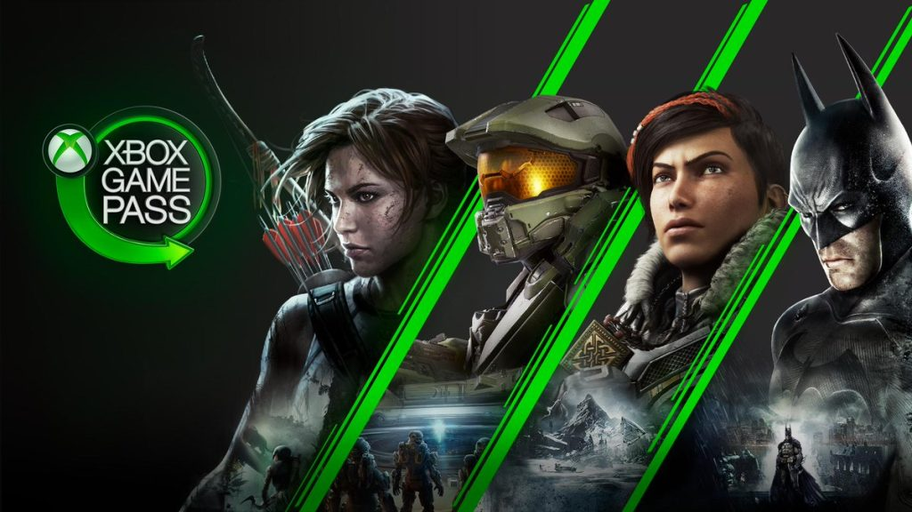

A evolução do Xbox:
como o console da Microsoft se tornou um gigante na indústria de games
O primeiro Xbox
Lançado em 15 de novembro de 2001 nos Estados Unidos com design em preto e verde, o console chegou ao mercado norte-americano com o preço de US$ 300. Na época, a intenção da Microsoft era competir por um espaço no mercado de videogames, amplamente dominado pela Sony e pela Nintendo, na época com os consoles PlayStation 2 e GameCube, respectivamente.

Entre as novidades da primeira geração, os aspectos técnicos foram surpreendentes para a época. A memória de 32 MB e também um disco rígido de 8 GB estavam presentes, e ainda assim, o Xbox foi o primeiro videogame a incluir um disco-rígido (HD) integrado. Como consequência, a Microsoft começou a ganhar fãs, notoriedade e, principalmente ótimos jogos de tiro em primeira pessoa. O sucesso da franquia de ficção-científica e militar, Halo, caracterizou o êxito da companhia de Bill Gates.
Embora a primeira versão tenha batido o Gamecube em vendas, a Microsoft perdeu para a Sony no mercado, com 155 milhões de unidades vendidas do PlayStation 2 contra apenas 24 milhões do Xbox.
O primeiro console da Microsoft também trouxe outro fato inédito, o Xbox Live, que possibilitava uma conexão à internet com a rede de jogos e tinha o modelo de negócios baseado em assinatura dos usuários. Além de outras vantagens, como acesso a músicas e aplicativos. Embora a Internet naquela época não fosse tão rápida, a decisão de lançar o Xbox Live se mostrou certeira em um contexto de longo prazo com uma maior velocidade de Internet nos anos seguintes.
O controverso controle “Duke”
Junto com o primeiro console também foram lançados os controles para o Xbox. Apelidados de “Duke”, os controles eram totalmente pretos e pesados, o que gerou crítica na época. Também contavam com joystick analógico e ao mesmo tempo um direcional, um fato que não era tão usual há duas décadas.

Logo no ano seguinte, em 2002, a Microsoft viu o desempenho de vendas do console não alcançar o esperado no Japão. A companhia não perdeu tempo e decidiu relançar um controle próprio para o país oriental, como forma de estimular as vendas. Rebatizado de “Xbox Controller S”, os 4 botões do lado direito ficam uniformemente espaçados e o controle ganhou o formato de “dinamite”. Nos anos seguintes, o controle chegou as prateleiras de vários países.

Entrando na segunda geração
Durante a década de 2000, a guerra pelo mercado de games se torna mais acirrada e a Sony e a Nintendo prometem chegar com mais força no mercado com os novos consoles PlayStation 3 e o Nintendo Wii. Só que a Microsoft, então um player recém-chegado no mercado de games após o lançamento do Xbox, também decide investir pesado para continuar entre os primeiros no ramo e começa outra evolução do Xbox.
Dessa forma, a companhia fundada por Bill Gates leva ao mercado o novo Xbox 360, que marca a segunda geração do console. O nome “360” foi adicionado após várias tentativas de nomes, como Xbox 2 e Next Xbox. Além disso, o sucessor do Xbox original foi lançado em 2005, um ano antes das empresas concorrentes lançarem o PlayStation 3 e o Nintendo Wii. Essa se mostrou uma ótima decisão, já que o console conquistou gerações e foi um sucesso em vários países.

O Xbox 360 contava com vários modelos, uma vantagem para deixá-lo personalizado para o cliente, como modelos de disco rígido entre 4 até 320 GB. O console tinha um processador com placa de vídeo de três núcleos capaz de operar até seis segmentos simultâneos com uma memória de 512 MB. A capacidade de renderização de gráficos era bem superior se comparado até mesmo com o PlayStation 3 e o Nintendo Wii.
Como resultado do investimento pesado em um hardware potente, a Microsoft bateu a Sony ao superar a gigante japonesa em vendas, alcançando a incrível marca de 77 milhões de Xbox 360 vendidos pelo mundo!
Além do lançamento, o Xbox Live também teve várias melhorias e o serviço cresceu. O software sofreu várias instabilidades ao longo dos anos e conseguiu se firmar no ano de 2011, um ano após chegar ao mercado um dispositivo inovador que, mesmo tendo vários problemas e sendo abandonado futuramente, ajudou a crescer a popularidade do Xbox.
Se a Nintendo pode brincar, a Microsoft também pode!
A Microsoft iria se destacar no mercado com um item que começou a ser vendido em 2010. O revolucionário Kinect chegou para mudar a maneira que os usuários se relacionam com os games. O acessório adicional ao Xbox possibilitava o modo de jogar e interagir com o console sem nenhum controle ou joystick, apenas com sensores que captam movimentos do corpo humano, como gestos e ações de mãos, braços e pernas.
A atitude foi uma contraofensiva direta ao Nintendo Wii, que inovou ao introduzir controles acionados por movimentos do jogador como o WiiMote e o Wii Balance Board. A Nintendo estava liderando essa geração ao conquistar um público muito mais amplo com seus jogos casuais combinados a controles naturais e intuitivos. A ideia da Microsoft com o Kinect era ampliar o número de jogadores e também oferecer novas formas de interagir com os videogames.
O Kinect foi um sucesso de lançamento, com 24 milhões de unidades vendidas em apenas 2 meses! Isso praticamente equivale a tudo que foi vendido da primeira versão do Xbox. Porém, o “deslumbramento” dos usuários com esse novo acessório logo desapareceu e, graças à falta de games de qualidade que utilizassem os recursos do Kinect, o aparelho foi descontinuado logo após o lançamento do futuro console da empresa, o Xbox One.
Mesmo sem ter bons títulos que usassem as ferramentas de captura de movimento do Kinect para proporcionar um gameplay interessante, o Kinect continua sendo elogiado até hoje por especialistas em tecnologia por causa de suas funcionalidades inovadoras e a precisão em perceber movimentos específicos dos usuários.
O controle mais ergonômico do Xbox 360
A segunda geração do Xbox ficou marcado com várias melhorias e inovações, como o já citado Kinect. Como um todo, o controle do Xbox 360 não poderia ser diferente. A nova versão do controle contava com a possibilidade de jogar sem fio e tinha uma entrada USB, além de possuir um design muito mais ergonômico e atrativo.

Todas as novidades foram somadas à retirada de dois botões na parte frontal do controle, passando para apenas os quatro botões no canto direito, além de ser disponibilizado nas cores preta e branca. O famoso botão do meio, com o símbolo da marca Xbox, também possibilitava ligar o console diretamente, o que é um atrativo a mais para dessa geração.
O terrível “Anel Vermelho da Morte”
Infelizmente as primeiras versões do Xbox 360 sofriam de um grave defeito de fabricação. Chamado pelos jogadores de o” Anel Vermelho da Morte” , esse problema era um defeito no hardware do console que fazia com que vários Xbox 360 parassem de funcionar. O nome veio por causa que, durante o defeito, o sistema acendia três luzes vermelhas em torno ao anel do botão ligar/desligar do console.

A Microsoft levou um bom tempo para admitir a falha grave no console e tomar atitudes para corrigir o problema. Muitos usuários conseguiram substituir seus consoles danificados através da assistência especializada da empresa, mas muitos outros ficaram apenas com um grande peso de papel ao lado de seus televisores.
Um design mais elegante para o Xbox 360
A Microsoft continuou investindo em aperfeiçoar o Xbox 360, com o console ganhando dois novos modelos distintos. Os modelos S (Slim) e E (Elite) foram introduzidos em 2010 e 2013, respectivamente. Essa “ramificação” do console da geração seria uma tendência que a Microsoft iria adotar em seus próximos lançamentos.
Ambas versões trouxeram mudanças relativas no design (além de contarem com entradas HDMI), deixando mais arrojado e com visual impactante ao adotar um acabamento preto brilhante, no caso da versão Elite, e também por serem menores e compacto em relação ao Xbox 360 original.


O Xbox One começa com o pé errado
Após quase 9 anos do lançamento do Xbox 360 e algumas versões derivadas, a Microsoft apresentou a terceira geração do console, o Xbox One, com aperfeiçoamentos e melhorias, principalmente na parte multimídia. Infelizmente, quando o console foi divulgado em 2013, o marketing da Microsoft focou tão pouco nos games para o novo console que muitos fãs e especialistas ficaram decepcionados com a nova máquina da empresa.
Além de ser um aparelho para games, o Xbox One também impulsionou o entretenimento ao reproduzir mídias de Blu-ray, DVD e ter conectividade USB, podendo gravar e transmitir jogos também. A Microsoft desejava que o console também funcionasse integrado com uma central multimídia ainda mais potente, para reprodução de vídeo, músicas e aplicativos. Tanto que a interface foi baseada no Windows 8, em blocos do sistema operacional. O sistema ainda integrava o sistema de voz Cortana, que era usado também em outros softwares da empresa.

O console permitiu aumentar o armazenamento com o uso de HDs externos por parte dos usuários. Além dos jogos, a CPU do console também era mais potente do que o Xbox 360, só que agora com quatro núcleos, ao invés de três. A única crítica é o hardware, já que acusaram de ser idêntico ao seu principal concorrente, o PlayStation 4.
O novo controle do Xbox One era um melhoramento em diversos aspectos do controle do Xbox 360. O design era praticamente o mesmo mas os botões agora eram mais responsivos e confortáveis de se utilizar. Infelizmente, o novo controle ainda precisava de pilhas comuns para funcionar.
E diferentemente do seu antecessor, o Xbox One não foi bem avaliado antes da sua chegada, já que a Microsoft queria que o console ficasse conectado 24 horas na internet e apenas rodasse jogos quando conectado. Some isso à impossibilidade de compartilhamentos de discos e você terá tantas críticas que a companhia teve que rever estas restrições e descartá-las antes do lançamento.
Outra melhoria do novo console foi o aprimoramento do Kinect, com câmera de 1080p e uma maior amplitude de visão, e também a possibilidade do aparelho adicional fazer o monitoramento da frequência cardíaca. Infelizmente, as desenvolvedoras investiram tão pouco em games que utilizassem as novas funcionalidades do Kinect que, pouco tempo depois, o equipamento foi descontinuado pela empresa.
Mesmo embalado pelo sucesso do Xbox 360, o Xbox One não conseguiu se sair bem no mercado. Embora tenha se mantido a patamares similares nas vendas com a Sony, que apostou no PlayStation 4, há estimativas que o Xbox One tenha vendido entre 26 a 40 milhões de consoles até 2017, número bem inferiores aos 77 milhões de aparelhos vendidos pelo seu antecessor.
Aliás, confira como está hoje a guerra pelo mercado de games entre a Microsoft, Nintendo e Sony.
Melhoramentos e simplificações no Xbox One
Igual a versão do Xbox 360 S, a Microsoft também lançou uma versão S (Slim) para o Xbox One depois de 3 anos. Em 2016 e com um mundo mais conectado e integrado com aplicativos e nuvem de dados, o Xbox One S chega com uma resolução de Blu-Ray 4K. Inclusive, o console consegue transformar jogos de 1080p em 4K. Além disso, essa versão remodelada do Xbox One removeu a entrada de Kinect, cimentando a decisão da Microsoft em abandonar o dispositivo.

Já em 2017, como novidade, a Microsoft lançou o Xbox One X, uma versão ainda mais potente do que o modelo S, ao garantir um processador de 8 núcleos e uma CPU baseada no sistema Radeon. O foco da empresa estava em criar um Xbox One com tecnologia de ponta para diminuir o tempo de carregamento e obter melhores qualidades gráficas nas exibições em games. E mesmo sendo mais tecnológico e potente, o Xbox One X é ainda menor que a versão Slim e mantém a cor preta como base do console.

Vocês querem games? Então venham para o time Xbox!
Em 2017, a Microsoft mostrou que, se sua plataforma de games não possui tantos títulos exclusivos quanto seus concorrentes na Sony ou Nintendo, ela podia oferecer mais games que os jogadores poderiam querer. Foi assim que nasceu o Xbox Game Pass, uma assinatura mensal por um preço baixo (valores variam entre R$ 44,99 e R$ 199,99, com o primeiro mês custando apenas 1 real) que garante ao jogador acesso a diversos títulos todos os meses, incluindo lançamentos exclusivos!
A empresa também oferece o Xbox Game Pass Ultimate, que oferece títulos para o Xbox One e para PC. Dessa forma a Microsoft garante a integração total entre os jogadores de console e os jogadores de computador ao oferecer um serviço que abrange as duas plataformas.
Novas cores e um controle para os apaixonados
Assim como as novidades do Xbox One S e X, a Microsoft levou uma mudança aos controles que vão além de melhorias em ergonomia. O Xbox Design Lab permite a customização em várias cores, uma inovação para os colecionadores e uma novidade além dos controles pretos e brancos usados desde o lançamento do Xbox.

Além disso, em 2015 a empresa lançou o Xbox One Elite Controller, um controle premium que contava com botões e gatilhos extras que podiam ser removidos e ajustados. O controle era completamente customizável e focado para jogadores profissionais e aqueles que desejam a experiência mais responsiva e realista possível em seus jogos.

O futuro dos games pertence ao Xbox Series X e S
Depois de muitos rumores e especulações, neste ano a Microsoft revelou seus novos consoles da próxima geração de games: o Xbox Series X e S.

O Series X, considerado a versão mais potente do console, vem com resolução 4k graças ao drive de disco 4K UHD Blu-ray. Além disso, ele conta com uma GPU de 12 Teraflops e SSD de 1TB, que garante ao console alta capacidade de armazenamento.
Já o Series S, versão mais compacta e totalmente digital, chega ao mercado sem leitor de disco entregando resolução de 1440p com taxas de quadro máxima de 120 fps. Vem com GPU de 4 Teraflops e SSD de 512 GB. Os dois consoles possuem processador AMD Zen 2 de oito núcleos, porém o Series X roda a 3,8 GHz e o Series S a 3,6 GHz.